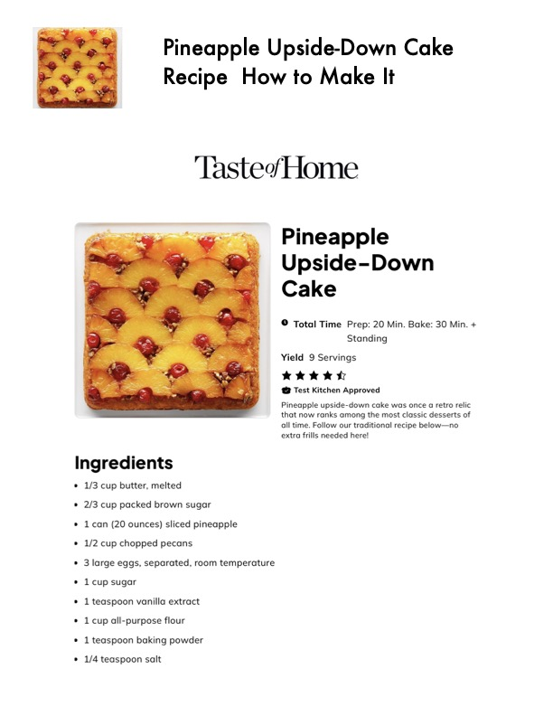

Pineapple Upside-Down Cake

Original cookbook page 793
Ingredients
- 1/3 cup butter, melted
- 2/3 cup packed brown sugar
- 1 can (20 ounces) sliced pineapple
- 1/2 cup chopped pecans
- * 3 large eggs, separated, room temperature
- * 1 cup sugar
- * 1 teaspoon vanilla extract
- * 1 cup all-purpose flour
- * 1 teaspoon baking powder
- * 1/4 teaspoon salt
- Pineapple
- Upside-Do
- Cake
- Standing
- wk KKK
- @ Test Kitchen Approved
- Pineapple upside-down cake wa
- that now ranks among the most.
- all time. Follow our traditional re
- extra frills needed here!
Instructions
- 1 can (20 ounces) sliced pineapple
Recipe #793 from collection